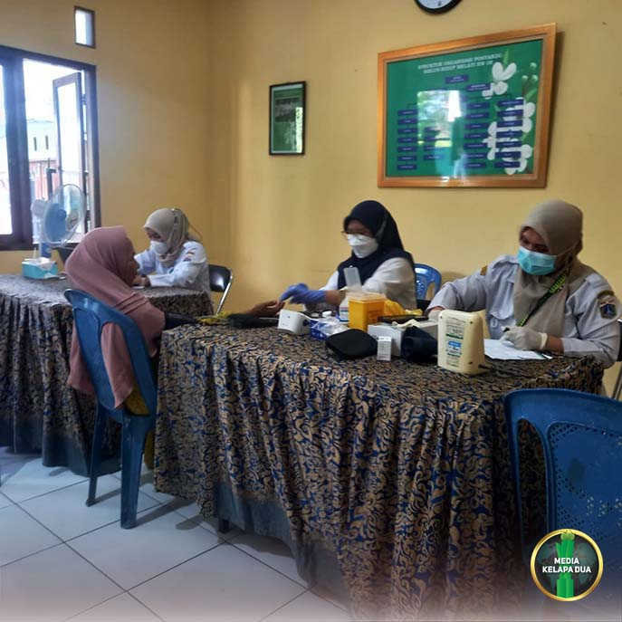

Berita Wilayah

Musrenbang Tingkat Walikota Jakarta Barat
Tanggal, 18 Desember 2025
MediaKada | Pemerintah Kota Administrasi Jakarta Barat menyelenggarakan Musyawarah Perencanaan Pembangunan (Musrenbang) Tingkat Kota untuk Tahun Anggaran 2026. Acara berlangsung di Ruang Ali Sadikin, Kantor Walikota Jakarta Barat, pada Kamis (18/12/2025).
Musrenbang ini dihadiri oleh jajaran pejabat pemerintah daerah, perwakilan masyarakat, serta tokoh-tokoh penting dari berbagai kecamatan dan Kelurahan. Agenda utama membahas prioritas pembangunan wilayah, mulai dari infrastruktur, pelayanan publik, hingga program pemberdayaan masyarakat.
Musrenbang sebagai wadah partisipasi masyarakat dan berbagai pihak untuk berdiskusi, menyepakati, dan menyusun rencana pembangunan daerah atau nasional secara bottom-up, mulai dari tingkat desa/kelurahan hingga pusat, agar pembangunan tepat sasaran, inklusif, dan sesuai kebutuhan riil warga.
Kegiatan berlangsung dengan suasana dialogis, di mana peserta menyampaikan usulan dan masukan secara terbuka. Hasil Musrenbang ini akan menjadi dasar penyusunan Rencana Kerja Pemerintah Daerah (RKPD) Jakarta Barat Tahun 2026.
(LMK-08 dan LMK-06 Kelapa Dua)

Kelurahan Kelapa Dua Gelar Knowledge Management